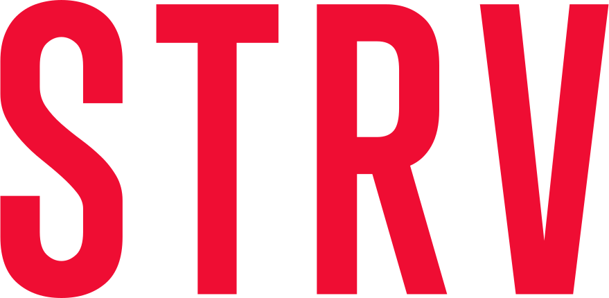

Pošli LOVE
Líbí se ti tento web? Ukázal ti cestu k programování? K lepší práci? Pomohl vaší firmě najmout super kolegy? Chcete jako firma podpořit juniory v jejich snažení? Aby mohlo junior.guru dál existovat a pomáhat co nejvíce lidem, potřebuje peníze na provoz.
GitHub Sponsors
- Podporuješ provoz junior.guru
- Pokud zaškrtneš, že podporuješ veřejně, objeví se tvůj avatar na úvodní stránce
- Platba kartou
Členství v klubu
- Podporuješ provoz junior.guru a navíc jsi v super komunitě
- Normální členství v klubu pro 1 člověka
- 2 týdny zdarma, potom platba kartou


Tarif „Sponzorujeme“
- Logo na úvodní stránce
- Skupinové členství v klubu, 15 míst
- Kartou nebo na fakturu, neplátce DPH
Tarif „Poskytujeme kurzy“
- Všechno co předchozí tarif
- Zvýrazněný zápis v katalogu kurzů s logem a odkazem bez nofollow (zlepší vaše SEO)
- Možnost přikupovat místa v klubu pro lektory či studenty, 1200 Kč/místo/rok
- Kartou nebo na fakturu, neplátce DPH
Tarif „Budujeme brand“
- Všechno co předchozí tarify
- Logo i na všech stránkách příručky
- Omezené množství, maximálně 4 firmy
- Kartou nebo na fakturu, neplátce DPH
-

-

- 
Kolik stojí „zdarma“ a bez reklam
Kromě klubu je tady všechno zdarma, i celá příručka, za kterou jsou stovky hodin práce.
Výhodou je, že si můžeš všechno hezky přečíst. Můžeš to poslat kamarádce. Může si to projít každý horník z Ostravy. Není to uzavřené v nějaké placené knize. Máš to pěkně na mobilu. Nevyskakují na tebe reklamy. Vše se tady doporučuje podle poctivého průzkumu a svědomí. Ne proto, že si někdo to doporučení zaplatil.
Nevýhodou je, že si tím junior.guru nevydělá na provoz. Bez příjmů si bude muset Honza Javorek, autor projektu, najít jiný způsob, jak uživit rodinu. Na aktualizace nebo rozšiřování obsahu nebude mít čas. Web postupně zastará a přestane být užitečný.
Sponzorství je způsob, jak nechat obsah junior.guru zdarma a zároveň dát lidem možnost poděkovat, pokud jim projekt pomohl. Nebo jak dát firmám možnost to tady nějak podpořit.
Pomáhat začátečníkům mě baví. Myslím si, že tak mohu nejefektivněji využít všechno, co umím. A že tak mohu nejlépe přispět k tomu, aby byl svět kolem mě lepší. Díky každému, kdo mi umožní v tom pokračovat!
Komu tím prospěješ
Cílem junior.guru je, aby co nejvíc lidí v Česku a na Slovensku mělo příležitost naučit se programovat. Aby každý Luďan z Mostu, každá puberťačka, každý vědec nebo každá máma na rodičovské měli po ruce návod, jak s tím začít.
Aby jejich cesta k první práci v IT nebyla past vedle pasti. Aby k tomu měli kultivovanou podpůrnou komunitu, kde budou vítaní a mezi svými. Aby měli nezávislé informace o poskytovatelích kurzů a aby se mohli snadno propojit s firmami, kam by mohli nastoupit.
Tento web má transparentní všechna čísla, otevřený zdrojový kód a obsah příručky je pod otevřenou licencí. Nic tady nevyskakuje, není tady žádný paywall, reklamy, affiliate odkazy, cookies.
Projekt tvoří Honza Javorek. Jeden člověk, podnikatel na volné noze, bez ambice rozjíždět firmu. Své úspěchy a selhání otevřeně popisuje v každotýdenních poznámkách na osobním blogu. Cílem je vydělat pouze na provoz junior.guru a jedné rodiny.
Ty jo! Skoro se mi chce vrátit zpátky do minulýho tisíciletí a znovu si začít hledat svou první práci v IT… Díky za to, dobrá práce!
Proč tady mít logo
Protože je to DEI a CSR. A protože tenhle projekt je love brand. Spojovat se jakkoliv s junior.guru může tvé značce jen pomoci.
Mnozí top senioři na trhu jsou v místní komunitě, doporučují junior.guru každému na potkání a mnohdy projekt i sami finančně podporují. Chodí sem hromady začínajících programátorů a testerů, kteří se jednou těmi seniory stanou.
Pokud chceš, aby pro tebe pracovali, aby si kupovali tvůj produkt, nebo aby věděli, že podporuješ super věci, které mají rádi, tak tady chceš mít logo.
Příručka je naprosto boží, přečetla jsem ji jedním dechem a nasbírala inspiraci, co ještě udělat. Tolik tipů na jednom místě člověk nikde jinde nenajde.
Honza Javorek má super reálnou příručku o hledání první práce v IT. Budeme ji určitě zmiňovat na kariérních workshopech.
Proč být v klubu i pokud nejsi junior
Můžeš do klubu házet promo, pozvánky, pracovní inzeráty, hledat lektory na kurzy… Všichni jsme v klubu sice proto, abychom pomáhali juniorům, ale každý z toho máme i nějaké benefity pro sebe:
Nejužitečnější jsou takové komunity, ve kterých můžeš potkat lidi s různými zkušenostmi a rolemi. Přesně takovou se snažíme vybudovat.
Proč do klubu posílat studenty kurzu
Discord si umí založit každý, ale budování opravdu funkční komunity je náročné a vyžaduje hodně času. Můžeš svým studentům udělat nějaký kariérní seminář, ale pokud má být podpora studentů při hledání práce efektivní, musí být soustavná a trvat měsíce.
Soustřeď se na svůj core business, tedy výuku programování, a tyhle věci neřeš. V klubu tvým studentům zajistíme živou komunitu, dostatečně dobré kariérové poradenství, podporu během hledání práce, nebo zpětnou vazbu na CV.
Mám již vypsán nový termín kurzu a mám tam přístup do junior.guru klubu jako benefit. Lidé si toho všimli a chválí si to.